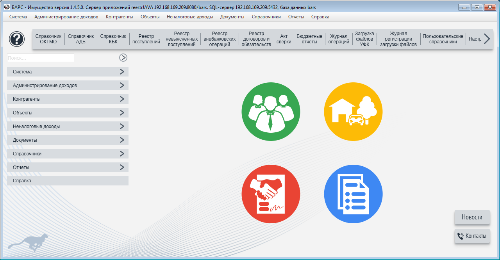
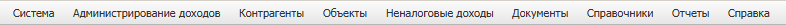
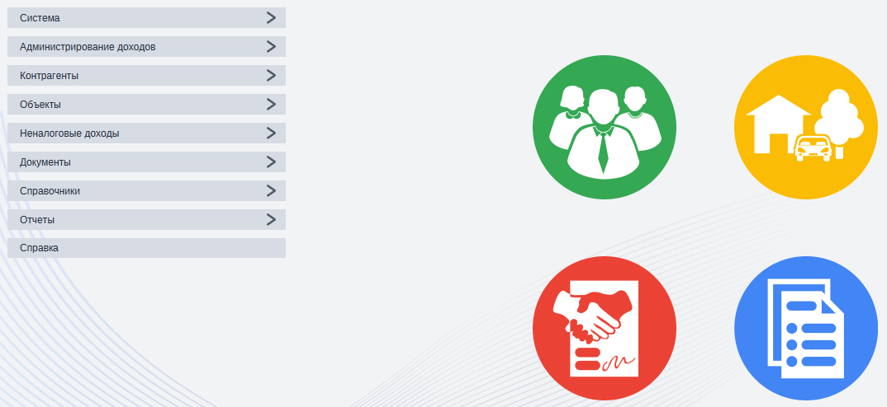

Главное окно
После авторизации пользователя осуществляется подключение к программе. На экране появляется главное окно программы (рис. 1.3.1).

Рис. 1.3.1. Главное окно программы
Главное окно содержит:
- Главное меню
- Панель управления
- Новости с сайта barsim.ru
- Служебные сообщения
- Информация по обслуживанию (контакты службы технической поддержки, номера договоров лицензионного обслуживания и т.д.).
Главное меню позволяет вызвать любую функцию системы (рис. 1.3.2).

Рис. 1.3.2. Главное меню
Панель управления - это набор кнопок, которые позволяют ускорить вызов основных реестров (рис. 1.3.3).

Рис. 1.3.3. Вертикальная и круглые панели управления